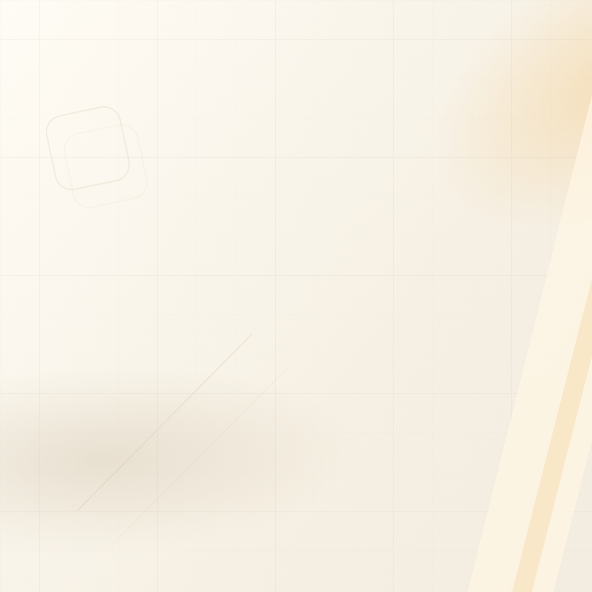
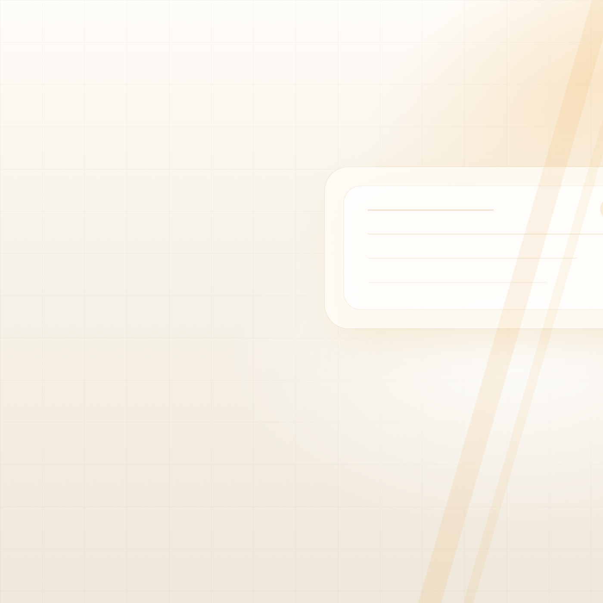
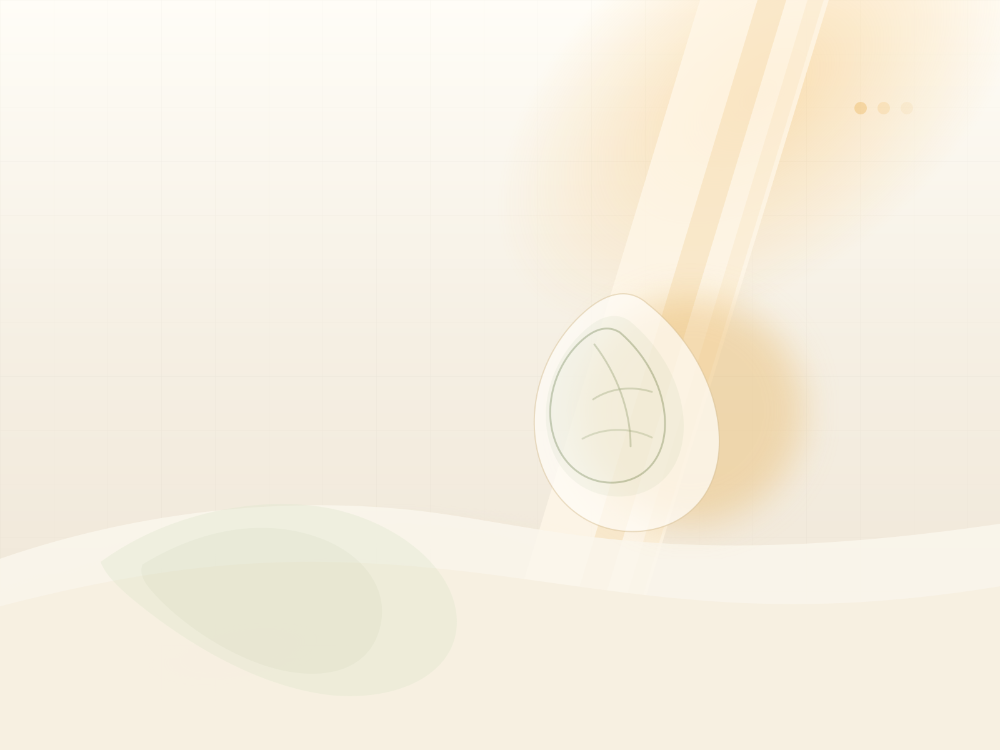
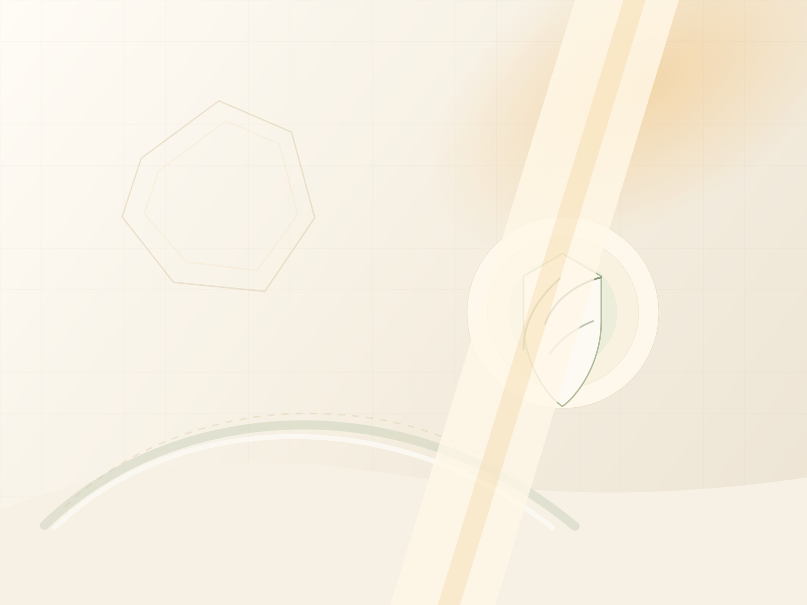
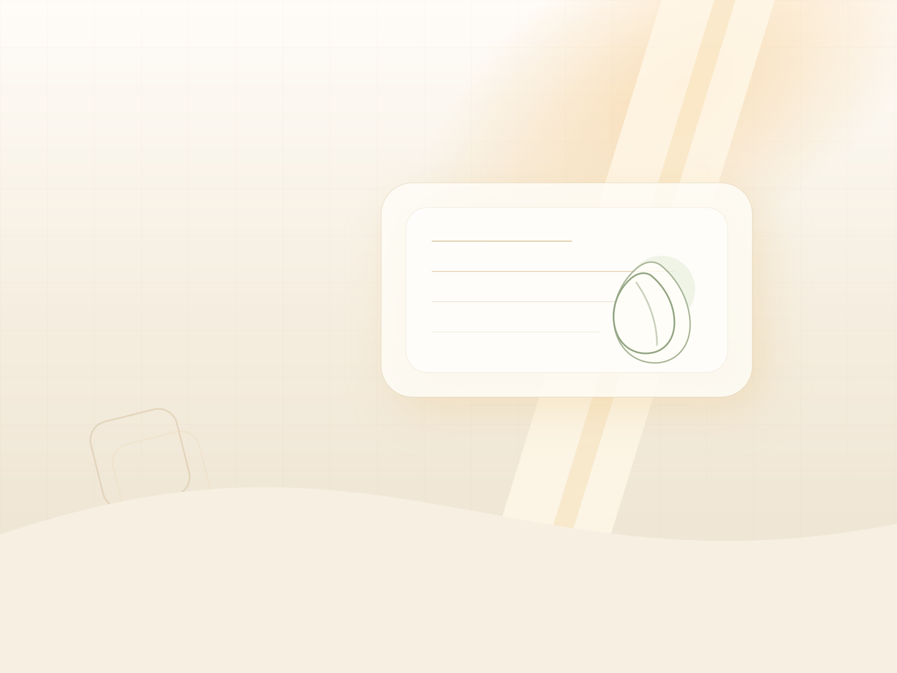

Это отдельная preview-страница. Ничего из этого пока не встроено в сам
лендинг. Просто посмотри варианты и скажи, какой фон тебе ближе:
A, B или C.


Эти варианты уже не просто “подложка”, а более характерный визуальный мир: экология, безопасность, премиальная атмосфера и мягкая связь с ADR.


